File: 000750.gt.txt (if the image is defective, simply delete all Arabic text and the line will be excluded)
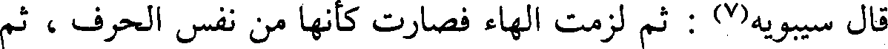
قال سيبويه(7) : ثم لزمت الهاء فصارت كأنها من نفس الحرف ، ثم
File: 000751.gt.txt (if the image is defective, simply delete all Arabic text and the line will be excluded)
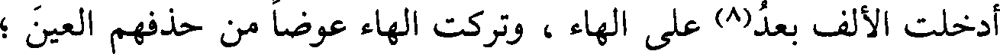
أدخلت الألف بعد(8) على الهاء، وتركت الهاء عوضا من حذفهم العين ؛
File: 000752.gt.txt (if the image is defective, simply delete all Arabic text and the line will be excluded)
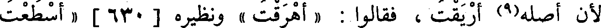
لأن أصله(9) أريقت ، فقالوا : « أهرقت » ونظيره [630] « أسطعت
File: 000753.gt.txt (if the image is defective, simply delete all Arabic text and the line will be excluded)
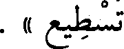
تسطيع » .
File: 000754.gt.txt (if the image is defective, simply delete all Arabic text and the line will be excluded)
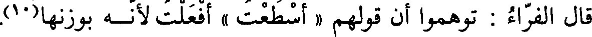
قال الفراء : توهموا أن قولهم « أسطعت » أفعلت لأنـه بوزنها(10).
File: 000755.gt.txt (if the image is defective, simply delete all Arabic text and the line will be excluded)
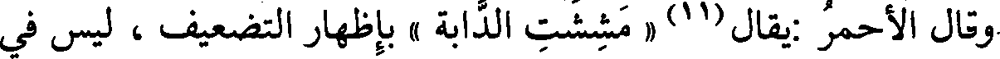
وقال الأحمر :يقال(11) « مششت الدابة » بإظهار التضعيف ، ليس في
File: 000756.gt.txt (if the image is defective, simply delete all Arabic text and the line will be excluded)
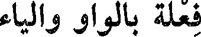
فعلة بالواو والياء
File: 000757.gt.txt (if the image is defective, simply delete all Arabic text and the line will be excluded)
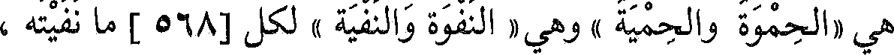
هي «الحموة والحمية » ، وهي « النفوة والنفية » لكل [568] ما نفيته ،
File: 000758.gt.txt (if the image is defective, simply delete all Arabic text and the line will be excluded)
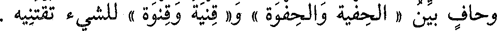
وحاف بين « الحفية والحفوة » و« قنية وقنوة » للشيء تقتنيه .
File: 000759.gt.txt (if the image is defective, simply delete all Arabic text and the line will be excluded)
فعلة بالياء ، وأصلها بالواو(1)
File: 000760.gt.txt (if the image is defective, simply delete all Arabic text and the line will be excluded)
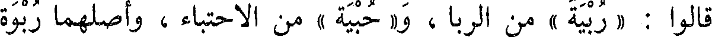
قالوا : « ربية » من الربا ، و« حبية » من الاحتباء ، وأصلهما ربوة
File: 000761.gt.txt (if the image is defective, simply delete all Arabic text and the line will be excluded)
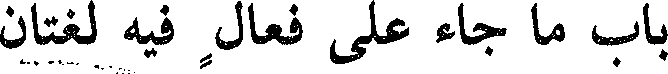
باب ما جاء على فعال فيه لغتان
File: 000762.gt.txt (if the image is defective, simply delete all Arabic text and the line will be excluded)
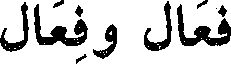
فعال وفعال
File: 000763.gt.txt (if the image is defective, simply delete all Arabic text and the line will be excluded)
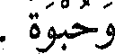
وحبوة .
File: 000764.gt.txt (if the image is defective, simply delete all Arabic text and the line will be excluded)
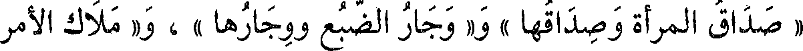
« صداق المرأة وصداقها » ، و« وجار الضبع ووجارها » ، و« ملاك الأمر
File: 000765.gt.txt (if the image is defective, simply delete all Arabic text and the line will be excluded)
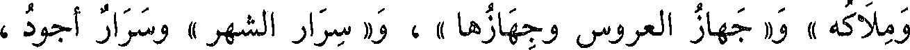
وملاكه » و« جهاز العروس وجهازها » ، و« سرار الشهر » وسرار أجود،
File: 000766.gt.txt (if the image is defective, simply delete all Arabic text and the line will be excluded)
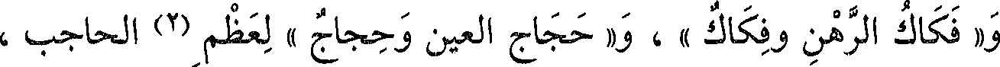
و« فكاك الرهن وفكاك » ، و« حجاج العين وحجاج » لعظم (2) الحاجب ،
File: 000767.gt.txt (if the image is defective, simply delete all Arabic text and the line will be excluded)
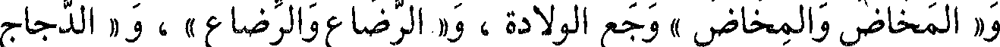
و« المخاض والمخاض » وجع الولادة ، و« الرضاع والرضاع » ، و« الدجاج
File: 000768.gt.txt (if the image is defective, simply delete all Arabic text and the line will be excluded)
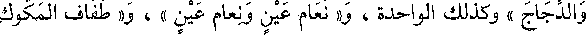
والدجاج » وكذلك الواحدة ، و« نعام عين ونعام عين » ، و« طفاف المكوك
File: 000769.gt.txt (if the image is defective, simply delete all Arabic text and the line will be excluded)
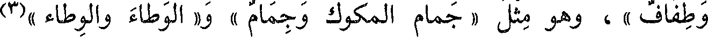
وطفاف » ، وهو مثل « جمام المكوك وجمام » و« الوطاء والوطاء »(3)
File: 000770.gt.txt (if the image is defective, simply delete all Arabic text and the line will be excluded)
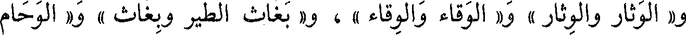
و« الوثار والوثار » و« الوقاء والوقاء » ، و« بغاث الطير وبغاث » و« الوحام
File: 000771.gt.txt (if the image is defective, simply delete all Arabic text and the line will be excluded)
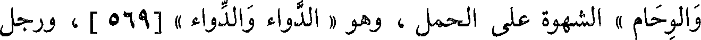
والوحام » الشهوة على الحمل ، وهو « الدواء والدواء » [569] ، ورجل
File: 000772.gt.txt (if the image is defective, simply delete all Arabic text and the line will be excluded)
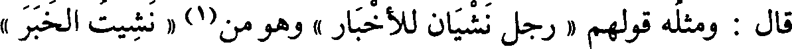
قال : ومثله قولهم « رجل نشيان للأخبار » وهو من(1) « نشيت الخبر »
File: 000773.gt.txt (if the image is defective, simply delete all Arabic text and the line will be excluded)
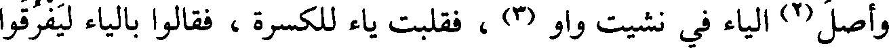
وأصل(2) الياء في نشيت واو (3) ، فقلبت ياء للكسرة ، فقالوا بالياء ليفرقوا
File: 000774.gt.txt (if the image is defective, simply delete all Arabic text and the line will be excluded)
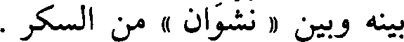
بينه وبين « نشوان » من السكر .
File: 000775.gt.txt (if the image is defective, simply delete all Arabic text and the line will be excluded)
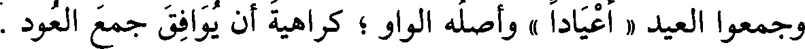
وجمعوا العيد « أعيادا » وأصله الواو ؛ كراهية أن يوافق جمع العود .
File: 000776.gt.txt (if the image is defective, simply delete all Arabic text and the line will be excluded)
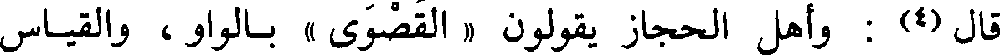
قال (4) : وأهل الحجاز يقولون « القصوى » بالواو ، والقياس
File: 000777.gt.txt (if the image is defective, simply delete all Arabic text and the line will be excluded)
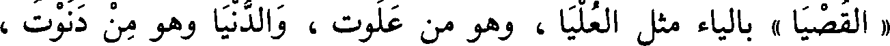
« القصيا » بالياء مثل العليا ، وهو من علوت ، والدنيا وهو من دنوت ،
File: 000778.gt.txt (if the image is defective, simply delete all Arabic text and the line will be excluded)
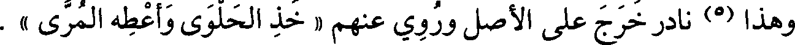
وهذا (5) نادر خرج على الأصل وروي عنهم « خذ الحلوى أعطه المرى » .
File: 000779.gt.txt (if the image is defective, simply delete all Arabic text and the line will be excluded)
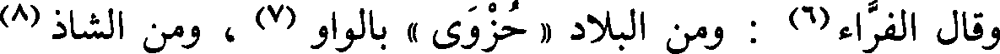
وقال الفراء(6) : ومن البلاد « حزوى » بالواو (7) ، ومن الشاذ (8)
To Save: `Ctrl+s`, make sure to choose `Webpage, complete`!